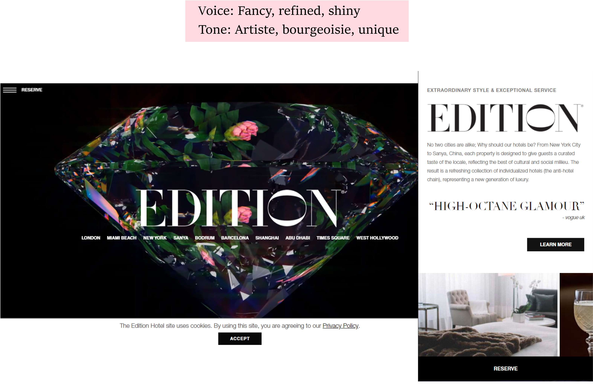
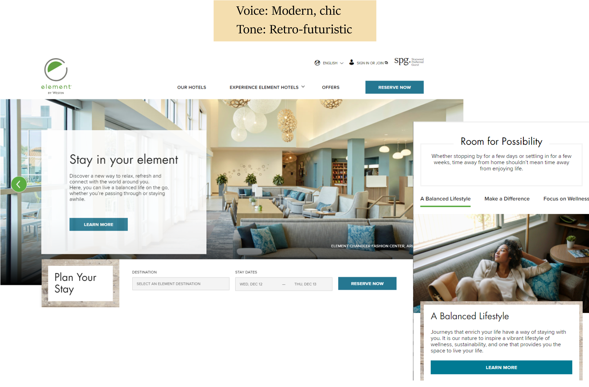

Marriott
My time at Marriott encapsulated many firsts. First time at an international brand and company. First time leading multiple teams. First time in a fast-paced environment with daily reviews before the agile approach really latched into the workplace as we know it today. It was also my first time working in the EST timezone from the PST one as I had just moved to California. I worked with different vendors on different projects and introduced UX concepts and best practices to the teams. We had such good turnaround and analytics that I went from a website manager type role to a Product Designer for the voice and tone of Marriott brand websites and mobile apps.
In this section, I am briefly going to show you how I took simple guidelines and created a unique world around them. When we meet to chat, I will gladly go into more depth of detail.
Using a couple of keywords, design and build a website utilizing the voice and tone of the brand.
"Sophisticated style at EDITION Hotels, a unique concept in the lifestyle hotel space"
The idea to showcase a rotating diamond with a stylized font is to attract those wishing to stay in a glamourous environment. The flowers inside show a soft sensibility and artistic thinking. The font is unique enough to expound those feelings.
Vacation Club is the primary timeshare brand of Marriott Vacations Worldwide Corporation. The brand comprises around 70 Marriott Vacation Club properties throughout the World.
The setting behind this brand was family-oriented long-term stays or timeshares. The showcase was to be a lightly colored beach environment with playful fonts. This site also needed focus on the many destinations worldwide.

This brand was designed to display the healthy, active traveler who wants to maintain a balanced lifestyle while on the road.
This was a brand that delved fully into the environmentally-friendly with energy and water efficient features. The design decisions to present a retro-futuristic look was to appeal to the forward-thinking crowd who enjoy fitness and positivity.
